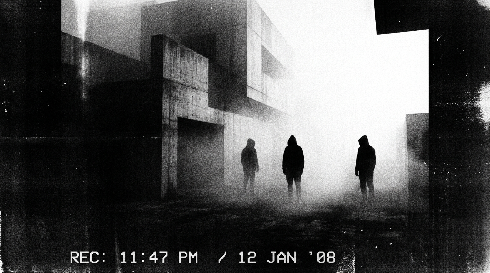

TRACKING TARGET
[
TRANSMISSION 04-Ω // RECORDING IN PROGRESS
]
WE ARE WATCHING. WE ARE LISTENING.
You are not observing the transmission. The transmission is observing you. Every cadence is archived. Every glance through the glass is cataloged under [REDACTED SECTOR].
Do not disconnect the horizontal hold. [THE WITNESSES REMAIN] until the broadcast terminates.
[00:00:00] OPTICAL RECEPTOR ENGAGED. SPECTATOR LOCATED.
CCTV FEED: REAR EXTERIOR // BRUTALIST SECTOR
45.2281° N, 93.1492° W
● LIVE INTERCEPT

+ 014.2
AZM: 284°
FIG: [3] DETECTED
ID: ANONYMOUS
RECOVERY REPORT: Found 35mm magnetic tape reel discovered buried near substation 04. Three anonymous hooded entities observed standing stationary in fog for 4 hours, 18 minutes. No vocalization recorded. Ground temperature -4°C.